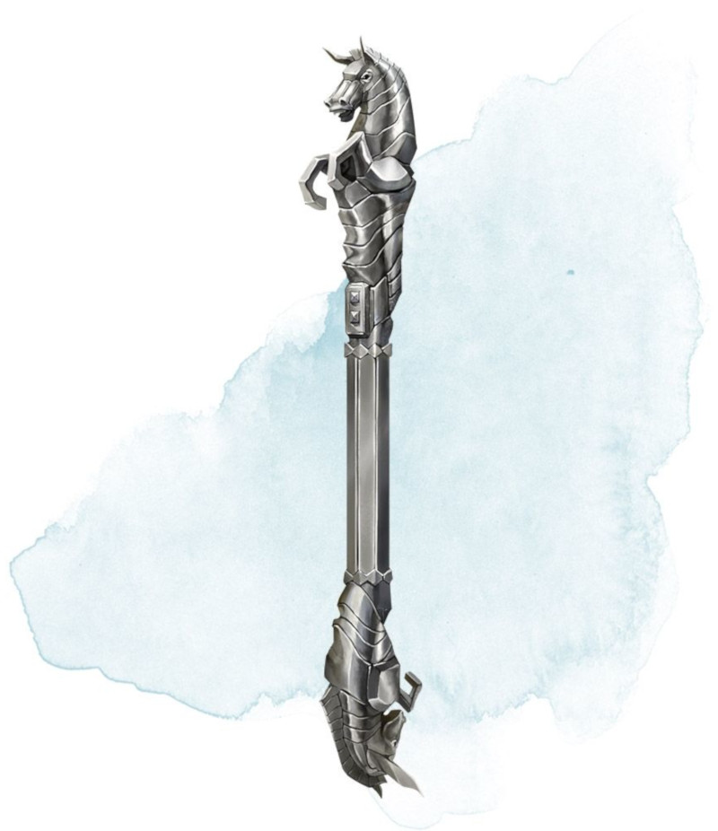

Immovable Rod
Rod, uncommon
This flat iron rod has a button on one end. You can use an action to press the button, which causes the rod to become magically fixed in place. Until you or another creature uses an action to push the button again, the rod doesn't move, even if it is defying gravity. The rod can hold up to 8,000 pounds of weight. More weight causes the rod to deactivate and fall. A creature can use an action to make a DC 30 Strength check, moving the fixed rod up to 10 feet on a success.
Dungeon Master´s Guide (SRD)
